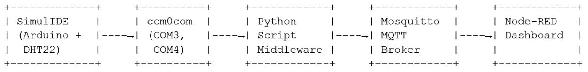
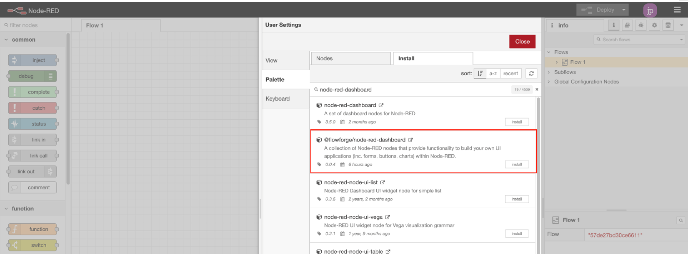

Cenário Fictício: A Necessidade de Monitoramento Ambiental Inteligente em Estufas Agrícolas
SUMÁRIO
2 Laboratório de Simulação para Monitoramento Ambiental 2
2.1 Arquitetura da Solução 2
2.1.1 SimulIDE 3
2.1.2 Driver de Porta Serial Virtual com0com (COM3, COM4) 3
2.1.3 Script MQTT Middleware Python 4
2.1.4 Mosquitto (Broker MQTT) 4
2.1.5 Node-RED 4
3 Planejamento e Levantamento de Requisitos (Sistema Real) 4
4 Instalação e Configuração do Ambiente 5
7 SimulIDE e Arduino: Montando o Laboratório Virtual (Sistema Virtual) 7
7.1 Interface Serial Externa: Criando a Ponte para o Mundo Exterior 7
9. Configuração do SimulIDE e Arduino Simulado 11
9.1 Adicionando o Arduino ao SimulIDE 11
9.2 Configurando o Módulo DHT22 no SimulIDE 11
9.3 Criando um Código para o DHT22 no Arduino IDE 11
9.4 Configurando a Porta Serial Virtual 12
10 Configuração da Conexão com o Script Python 12
11 Instalando e Configurando o Proxmox no VirtualBox 13
11.1 Criando a Máquina Virtual no VirtualBox 13
11.2 Instalando o Mosquitto MQTT Broker 13
13.1 Implementação do Node-RED 15
© 2025 Cleyton Pereira dos Santos. Este trabalho é licenciado sob a Licença Creative Commons Atribuição-CompartilhaIgual 4.0 Internacional. Você é livre para compartilhar e adaptar o material, desde que atribua o crédito ao autor original e compartilhe suas adaptações sob a mesma licença.
Canais:
Github: https://canalcleyton.github.io
Youtube: @prof.cleytonpereira5913
1 Introdução
A Cooperativa Agrícola Vale Verde (fictícia) enfrenta um desafio crítico em suas estufas de produção de hortaliças orgânicas. Variações bruscas de temperatura e umidade têm causado perdas significativas nas safras, especialmente durante as transições sazonais. Os métodos tradicionais de monitoramento manual são ineficientes e não permitem respostas rápidas às mudanças ambientais.
A cooperativa precisa de uma solução que:
Uma solução possível pode ser baseada em Arduino, MQTT e Node-RED, tal que atenda essas necessidades o mais próximo do cenário ideal. O sistema irá permitir que os agricultores visualizem as condições ambientais em tempo real através de dashboards intuitivos, recebam alertas em seus smartphones quando parâmetros críticos são ultrapassados, e tomem decisões baseadas em dados para otimizar a produção.
Além disso, a arquitetura modular permite futuras expansões, como controle automatizado de irrigação, ventilação e sombreamento, transformando gradualmente as estufas convencionais em ambientes de cultivo inteligentes e sustentáveis.
2 Laboratório de Simulação para Monitoramento Ambiental
2.1 Arquitetura da Solução

A figura acima demonstra a arquitetura da solução, cujas partes são: 1 – software de simulação eletrônica, 2 – portas seriais virtuais, 3 – Middleware Python MQTT, 4 – Servidor Mosquitto (MQTT) e 5 – Dashboard baseada em Node-RED.
Fluxo de Dados:
Simulação (SimulIDE)
Ponte Serial (com0com)
Middleware Python
Broker MQTT (Mosquitto)
Node-RED
Entrada: Nó MQTT assinante do tópico sensor/dht22
Processamento:
Saída:
2.1.1 SimulIDE
O uso do SimulIDE permite a criação de um ambiente de simulação para o desenvolvimento inicial do sistema, eliminando riscos de danos a hardware físico durante a fase experimental. Esta plataforma contém recursos para a criação de circuitos virtuais com Arduino e sensores DHT22, viabilizando testes de lógica de aquisição de dados sem custos com componentes reais. A simulação também facilita a indução de condições extremas para validar o comportamento do sistema em cenários críticos que seriam difíceis de reproduzir fisicamente.
2.1.2 Driver de Porta Serial Virtual com0com (COM3, COM4)
A utilização do com0com para criar portas seriais virtuais (COM3 e COM4) é essencial para estabelecer o canal de comunicação entre o ambiente simulado e o middleware. Esta ponte permite testar o fluxo completo de dados sem hardware físico, simulando a conexão serial que existiria entre um Arduino real e o computador. Isso possibilita a validação do protocolo de comunicação e do formato dos dados antes da implementação em dispositivos reais.
2.1.3 Script MQTT Middleware Python
O middleware em Python atua como tradutor entre protocolos diferentes, tal se deve pela necessidade de converter dados do formato serial para o protocolo MQTT. Python foi escolhido pela sua simplicidade de implementação e bibliotecas robustas tanto para comunicação serial quanto para MQTT. Este componente demonstra a capacidade de integração entre sistemas legados (comunicação serial) e protocolos modernos de IoT, um cenário comum em aplicações reais.
2.1.4 Mosquitto (Broker MQTT)
A implementação do Mosquitto como broker MQTT ocorre porque um sistema de mensageria leve e padronizado é amplamente desejável. Este componente demonstra a arquitetura publish/subscribe, em que este permite desacoplamento entre produtores e consumidores de dados. O broker age como ponto central de distribuição de informações, essencial para sistemas IoT escaláveis, e permite que múltiplos clientes recebam os mesmos dados simultaneamente sem sobrecarga do sistema de aquisição.
2.1.5 Node-RED
O Node-RED completa a solução como plataforma de integração e visualização, dada sua capacidade de criar fluxos de processamento sem conhecimento profundo de programação. Este componente demonstra princípios fundamentais de processamento de dados em tempo real, transformação, filtragem e visualização através de uma interface gráfica. A plataforma permite a rápida prototipação de dashboards e sistemas de alerta, além de integração com serviços externos, exemplificando como sistemas de monitoramento modernos devem apresentar os dados de forma acessível para tomada de decisões.
Este laboratório, com seus cinco componentes integrados, proporciona um ambiente de aprendizado completo que simula desafios reais de sistemas IoT, fator que irá preparar os estudantes para implementações em escala mais próxima a industrial.
3 Planejamento e Levantamento de Requisitos (Sistema Real)
1. Requisitos de Hardware
2. Requisitos de Software
Planejamento da Implementação
4 Instalação e Configuração do Ambiente
1. Montagem do Circuito
2. Configuração do Arduino
3. Configuração do Computador/Servidor
4. Testes e Validação
5 Arquitetura da Solução
A comunicação entre os componentes segue o seguinte fluxo:
6 Detalhamento Técnico
1. Código no Arduino
O microcontrolador é responsável por:
2. Código em Python
O script executado no computador:
Benefícios da Abordagem
Aplicações Práticas
7 SimulIDE e Arduino: Montando o Laboratório Virtual (Sistema Virtual)
7.1 Interface Serial Externa: Criando a Ponte para o Mundo Exterior
7.2 Configurando as Portas Seriais Virtuais: Definindo os Números de Telefone
7.3 Código em Python
O script executado no computador:
8 Requisitos
Antes de começarmos, certifique-se de ter os seguintes softwares instalados:
Roteiro para Instalação e Configuração do Ambiente Arduino IDE e SimulIDE
1. Preparação do Ambiente Verifique os requisitos do sistema: Certifique-se de que seu sistema atenda aos requisitos mínimos para rodar o SimulIDE e o Arduino IDE.
2. Instalação do Arduino IDE Baixe o Arduino IDE: Acesse o site oficial do Arduino. Escolha a versão adequada para o seu sistema operacional (Windows, macOS ou Linux). Instale o Arduino IDE: Execute o instalador baixado e siga as instruções na tela. Após a instalação, abra o Arduino IDE.
3. Instalação do SimulIDE Baixe o SimulIDE: Acesse o site do SimulIDE. Faça o download da versão mais recente para seu sistema operacional. Instale o SimulIDE: Para Windows, extraia o arquivo ZIP e execute o SimulIDE.exe. Para Linux, faça o download do pacote e siga as instruções de instalação específicas da distribuição.
4. Configuração do SimulIDE Abra o SimulIDE: Ao abrir, você verá a interface principal. Adicione o Arduino ao SimulIDE: Arraste o módulo Arduino da biblioteca de componentes para o painel de simulação. Configure as portas de comunicação: Se necessário, configure os pinos TX (4) e RX (5) para comunicação serial.
5. Configuração do Arduino Simulado Adicione um Sensor (ex: DHT22): Localize o sensor DHT22 na biblioteca de componentes do SimulIDE e arraste-o para a simulação. Conecte os pinos VCC, GND e DATA conforme descrito no guia. Monte o circuito: Certifique-se de que todas as conexões estão corretas.
6. Criando o Código no Arduino IDE Escreva o código para o Arduino: Utilize a biblioteca DHT para implementar a leitura do sensor. Um exemplo básico de código já foi mencionado no guia.
7. Testando a Simulação Compile e execute o código: Antes de compilar, configure o tipo de placa correta e a porta COM (se estiver usando algum dispositivo físico). Inicie a simulação no SimulIDE: Observe os dados no monitor serial do SimulIDE para garantir que o sensor está funcionando corretamente.
8. Integração com Comunicações Seriais Configure portas seriais virtuais, se necessário (com0com ou similar). Utilize ferramentas como NetCat ou Putty para testar a comunicação. Conclusão Ao final dessa configuração, você deverá ter um ambiente de simulação funcional com Arduino e SimulIDE, capaz de ler e processar dados de sensores virtuais. Aproveite para experimentar e expandir os seus projetos com diferentes componentes e funcionalidades!
com0com (Para criar portas seriais virtuais)
A instalação do emulador de portas seriais virtuais com0com é um passo importante para criar uma comunicação entre o SimulIDE e outros aplicativos ou dispositivos. Aqui está um guia passo a passo para a instalação e configuração do com0com: Guia de Instalação do com0com
1. Download do com0com Acesse o site oficial do com0com: com0com SourceForge. Clique no link de download da versão mais recente (geralmente há um arquivo ZIP disponível).
2. Instalação do com0com Extraia o arquivo ZIP: Após o download, extraia o conteúdo do arquivo ZIP em uma pasta de sua escolha. Execute o instalador: Navegue até a pasta extraída e execute o arquivo setup.exe ou similar. Siga o Wizard de instalação: Durante a instalação, você será orientado por um assistente. Escolha as opções padrão, a menos que você tenha requisitos específicos. O instalador pode solicitar permissões de administrador; aceite para que a instalação prossiga.
3. Configuração do com0com Abra o 'com0com Setup': Após a instalação, você pode encontrar o aplicativo no menu Iniciar ou na pasta onde o com0com foi instalado. Execute setup para abrir a interface de configuração do com0com. Adicione um par de portas seriais virtuais: Na interface do com0com, você verá opções para adicionar portas. Clique em "Add Pair" ou "Adicionar Par". Você verá duas novas portas seriais (por exemplo, COM3 e COM4). Conclua a configuração: Após adicionar as portas, clique em "OK" ou "Aplicar" para finalizar a configuração.
4. Verificação das Portas Virtuais Acesse o Gerenciador de Dispositivos do Windows: Abra o Gerenciador de Dispositivos (pressione Win + X e selecione Gerenciador de Dispositivos). Verifique as portas: Expanda a seção "Portas (COM & LPT)" e veja se suas novas portas (COM3 e COM4, por exemplo) estão listadas. Isso confirma que o emulador foi instalado corretamente.
5. Configuração de Aplicativos Configure o SimulIDE: No SimulIDE, adicione um módulo de Interface Serial e configure-o para usar a porta COM que você designou (ex: COM3). Configure a comunicação com outros aplicativos (como NetCat): Para enviar dados da porta COM4 para um aplicativo externo, você pode utilizar ferramentas como NetCat.
6. Teste da Comunicação Verifique a comunicação: Utilize um aplicativo como o PuTTY ou o próprio NetCat para garantir que as portas estão comunicando corretamente entre si. Para abrir um terminal no NetCat e redirecionar a saída, você pode fazer a seguinte configuração (no prompt de comando): nc -l -p 1234 < COM4
Conclusão
Com o com0com instalado e configurado, você terá um ambiente de portas seriais virtuais que permite a comunicação entre o SimulIDE e outros softwares, oferecendo maior flexibilidade para simulações e testes. Essa configuração é crucial para operações em que dispositivos físicos ou virtuais precisam interagir com um servidor ou outro conjunto de dispositivos. Aproveite a integração do com0com em seus projetos de simulação e teste!
VirtualBox(Para virtualizar o Proxmox no Windows)
Proxmox VE(Ambiente de virtualização onde rodaremos o servidor MQTT)
Mosquitto MQTT Broker(Para gerenciar mensagens enviadas pelos sensores)
9. Configuração do SimulIDE e Arduino Simulado
9.1 Adicionando o Arduino ao SimulIDE
9.2 Configurando o Módulo DHT22 no SimulIDE
9.3 Criando um Código para o DHT22 no Arduino IDE
Instale a biblioteca do DHT no Arduino IDE, se ainda não tiver:
#include <DHT.h>
#include <ArduinoJson.h>
#include <SoftwareSerial.h>
// Definições do sensor DHT22
#define DHTPIN 6 // Pino onde o DHT22 está conectado
#define DHTTYPE DHT22 // Tipo do sensor DHT
DHT dht(DHTPIN, DHTTYPE);
// Definições da porta serial externa
SoftwareSerial extSerial(4, 5); // RX (pino 4), TX (pino 5)
// Intervalo de leitura do sensor (em milissegundos)
const unsigned long READ_INTERVAL = 7000; // Intervalo de leitura (7s)
// Variáveis para controle de tempo
unsigned long lastReadTime = 0;
// Função para inicializar o sistema
void setup() {
// Inicializa a comunicação serial padrão para depuração (opcional)
Serial.begin(115200);
delay(100); // Pequeno delay para estabilizar a comunicação
// Inicializa a comunicação serial externa (COM3 no SimulIDE)
extSerial.begin(9600); // Taxa de transmissão ajustada para 9600 bps
delay(100);
// Inicializa o sensor DHT
dht.begin();
Serial.println("Sistema iniciado. Aguardando leitura de dados...");
extSerial.println("Sistema iniciado. Aguardando leitura de dados...");
}
// Função para ler dados do sensor e enviar via SoftwareSerial
void readAndSendData() {
// Lê os dados do sensor DHT22
float h = dht.readHumidity();
float t = dht.readTemperature();
// Verifica se as leituras falharam
if (isnan(h) || isnan(t)) {
Serial.println("Falha ao ler do DHT!");
extSerial.println("Falha ao ler do DHT!");
return;
}
// Cria um documento JSON usando ArduinoJson
StaticJsonDocument<200> doc;
doc["temperatura"] = t;
doc["umidade"] = h;
// Serializa o JSON em um buffer
char buffer[200];
serializeJson(doc, buffer);
// Envia os dados via SoftwareSerial (COM3 no SimulIDE)
extSerial.println(buffer);
// Exibe os dados no monitor serial padrão para depuração (opcional)
Serial.print("Dados enviados: ");
Serial.println(buffer);
}
// Função principal de loop
void loop() {
// Verifica se é hora de ler os dados do sensor
unsigned long now = millis();
if (now - lastReadTime >= READ_INTERVAL) {
lastReadTime = now;
readAndSendData(); // Lê e envia os dados via SoftwareSerial
}
}
9.4 Configurando a Porta Serial Virtual
10 Configuração da Conexão com o Script Python
Script Python:
pip install pyserial paho-mqtt json pyserial
Escrever o código da ponte Python MQTT (arquivo: pontemqtt.py):
import serial
import json
import paho.mqtt.client as mqtt
import time
# Configurações
SERIAL_PORT = "COM4"
BAUD_RATE = 9600
MQTT_BROKER = "localhost"
MQTT_PORT = 1883
MQTT_TOPIC = "sensor/dht22"
# Conexão serial
ser = serial.Serial(SERIAL_PORT, BAUD_RATE, timeout=1)
print("Lendo dados da porta serial e publicando no MQTT...")
# Cliente MQTT
client = mqtt.Client()
client.connect(MQTT_BROKER, MQTT_PORT, 60)
while True:
try:
if ser.in_waiting > 0:
line = ser.readline().decode('utf-8').strip()
data = json.loads(line)
# Publicar no MQTT
client.publish(MQTT_TOPIC, line)
print(f"Publicado: {data}")
except Exception as e:
print(f"Erro: {e}")
time.sleep(0.1)
11 Instalando e Configurando o Proxmox no VirtualBox
11.1 Criando a Máquina Virtual no VirtualBox
11.2 Instalando o Mosquitto MQTT Broker
Acesse o terminal do Proxmox e instale o Mosquitto:
apt update && apt install mosquitto mosquitto-clients -y
Inicie o Mosquitto:
systemctl start mosquitto
Edite o arquivo de configuração para permitir conexão externa:
nano /etc/mosquitto/mosquitto.conf
listener 1883 0.0.0.0
allow_anonymous true
Reinicie o Mosquitto:
systemctl restart mosquitto
12 Testando a Comunicação
Para garantir que tudo está funcionando:
Se tudo estiver correto, seu ambiente de simulação estará configurado com sucesso!
13 Node-RED
O Node-RED é uma ferramenta de programação visual que permite conectar dispositivos de hardware, APIs e serviços online de forma simples e intuitiva. Foi desenvolvido originalmente pela IBM para a Internet das Coisas (IoT), mas hoje é usado para criar fluxos de automação em diversos contextos.
Com o Node-RED, você pode criar aplicações através de uma interface gráfica de arrastar e soltar, conectando "nós" que representam diferentes funcionalidades. Isso facilita a criação de fluxos de dados sem precisar escrever código complexo, tornando a automação acessível mesmo para quem não tem experiência avançada em programação.
O Node-RED conecta dispositivos de hardware através de:
A grande vantagem é que o Node-RED abstrai a complexidade da comunicação com o hardware, permitindo que você se concentre na lógica do que deseja fazer com os dados, em vez de se preocupar com os detalhes técnicos da implementação.
13.1 Implementação do Node-RED
Instalar e Configurar o Node-RED
Instale o Node.js e o Node-RED:
sudo apt install nodejs npm -y
sudo npm install -g --unsafe-perm node-red
Inicie o Node-RED:
node-red
Adicione um nó MQTT no fluxo:
Configure o redirecionamento de portas no Windows (Caso tenha usado WSL2. Obs: não se usa para o caso do VirtualBox):
netsh interface portproxy add v4tov4 listenport=1880 listenaddress=0.0.0.0 connectport=1880 connectaddress=172.31.64.117
Instalação
O Node-RED Dashboard 2.0 do FlowFuse está disponível no Node-RED Palette Manager. Para instalá-lo:

Captura de tela mostrando os nós disponíveis no Node-RED Palette Manager
Os nós estarão disponíveis no seu editor para você começar.
Se você quiser usar npm para instalar seus nós, você pode seguir estas instruções
Hierarquia do painel
Cada Dashboard é uma coleção de widgets (por exemplo, gráficos, botões, formulários) que podem ser configurados e organizados em nossa própria Interface de Usuário. A hierarquia de um Dashboard é a seguinte:
Fluxo de Processamento
[
{
"id": "ceb6f96acc930456",
"type": "ui-gauge",
"z": "a0b920b616cfd474",
"name": "Medidor de Temperatura",
"group": "1ccc457a33169364",
"order": 1,
"width": 3,
"height": 3,
"gtype": "gauge-34",
"gstyle": "needle",
"title": "Medidor de Temperatura",
"units": "units",
"icon": "",
"prefix": "",
"suffix": "",
"segments": \[
{
"from": "0",
"color": "\#5cd65c"
},
{
"from": "4",
"color": "\#ffc800"
},
{
"from": "7",
"color": "\#ea5353"
}
\],
"min": "-15",
"max": "45",
"sizeThickness": 16,
"sizeGap": 4,
"sizeKeyThickness": 8,
"styleRounded": true,
"styleGlow": false,
"className": "",
"x": 490,
"y": 20,
"wires": \[\]
},
{
"id": "1ccc457a33169364",
"type": "ui-group",
"name": "Temperatura",
"page": "16627b3330493ab7",
"width": 6,
"height": 1,
"order": 1,
"showTitle": true,
"className": "",
"visible": "true",
"disabled": "false",
"groupType": "default"
},
{
"id": "16627b3330493ab7",
"type": "ui-page",
"name": "Monitor Ambiental",
"ui": "4344ffad474cf9f4",
"path": "/page1",
"icon": "home",
"layout": "grid",
"theme": "default",
"breakpoints": \[
{
"name": "Default",
"px": "0",
"cols": "3"
},
{
"name": "Tablet",
"px": "576",
"cols": "6"
},
{
"name": "Small Desktop",
"px": "768",
"cols": "9"
},
{
"name": "Desktop",
"px": "1024",
"cols": "12"
}
\],
"order": 1,
"className": "",
"visible": "true",
"disabled": "false"
},
{
"id": "4344ffad474cf9f4",
"type": "ui-base",
"name": "DHT22",
"path": "/dashboard",
"appIcon": "",
"includeClientData": true,
"acceptsClientConfig": \[
"ui-notification",
"ui-control"
\],
"showPathInSidebar": false,
"headerContent": "page",
"navigationStyle": "default",
"titleBarStyle": "fixed",
"showReconnectNotification": true,
"notificationDisplayTime": 1,
"showDisconnectNotification": true
}
]
Fonte para aprimoramento: https://youtu.be/TaGtWwmg4FQ?si=jWboKWyNNZRMgtMA
14 Testes e Validação
15 Conclusão
Com este guia, você aprendeu a:
Agora, você pode expandir o projeto adicionando mais sensores ou integrando com dashboards para visualizar os dados recebidos!
16 Referências
FLOWFUSE. Getting Started. FlowFuse Dashboard. Disponível em: https://dashboard.flowfuse.com/getting-started.html. Acesso em: 11 mar. 2025.
SANTOSa, C. P. Instalação do SimulIDE no Windows. Disponível em: https://youtu.be/M1ELCbpGHHU?si=zbPuw2tgN6Z6CcCj. Acesso em: 11 mar. 2025.
SANTOSb, V. Instalação do Simulador para Arduino (SimulIDE) e Emulador de porta serial (com0com). Disponível em: https://youtu.be/01j5eJVQ6os?si=psAdjwJbr4pRtUzn. Acesso em: 11 mar. 2025.